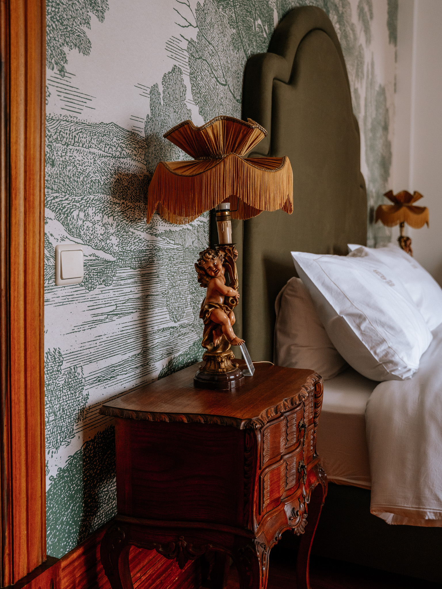
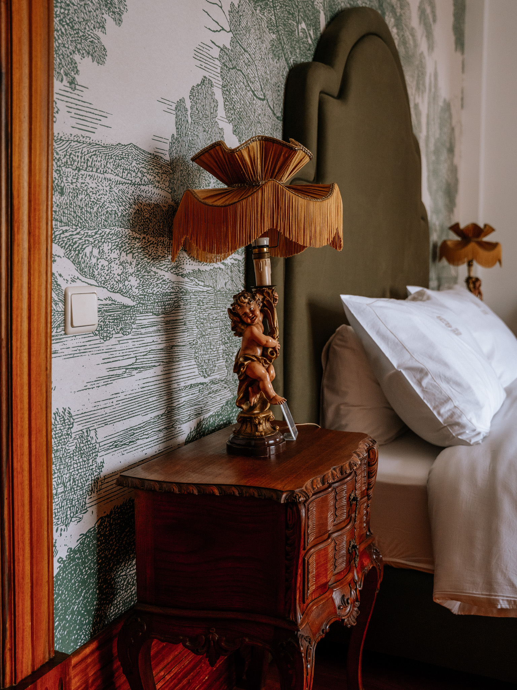

A Essência
A Casa do Fontão é uma Casa Histórica com arquitetura do século XVIII — uma casa de charme, onde o tempo parece abrandar.
Cada detalhe — dos móveis antigos, soalhos, objetos decorativos e antiguidades inigualáveis, aos tecidos de qualidade excelente, ao conforto da cama — foi pensado para oferecer uma experiência sensorial e emocional, onde a história encontra o conforto contemporâneo.
"Um refúgio onde o passado sussurra histórias e o presente convida ao descanso."